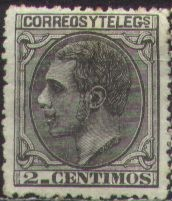
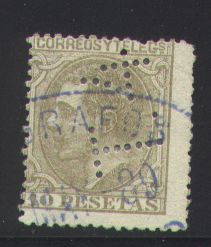
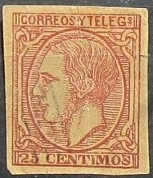

Return To Catalogue - Spain overview
Note: on my website many of the
pictures can not be seen! They are of course present in the
catalogue;
contact me if you want to purchase it.




2 c black 5 c green 10 c red 20 c brown 25 c blue 40 c brown 50 c orange 1 p red 4 p grey 10 p brown
These stamps have perforation 14.
Value of the stamps |
|||
vc = very common c = common * = not so common ** = uncommon |
*** = very uncommon R = rare RR = very rare RRR = extremely rare |
||
| Value | Unused | Used | Remarks |
| 2 c | * | * | |
| 5 c | * | * | |
| 10 c | * | c | |
| 20 c | *** | ** | |
| 25 c | ** | c | |
| 40 c | ** | * | |
| 50 c | *** | * | |
| 1 P | *** | * | |
| 4 P | RR | *** | |
| 10 P | RR | R | |
Other design (1882)

15 c orange 30 c lilac 75 c violet
Value of the stamps |
|||
vc = very common c = common * = not so common ** = uncommon |
*** = very uncommon R = rare RR = very rare RRR = extremely rare |
||
| Value | Unused | Used | Remarks |
| 15 c | * | c | |
| 30 c | *** | * | |
| 75 c | *** | * | |
Stamps cancelled with three bars, after they became obsolete and were sold to a stamp dealer:

Stamps with a hole are used for telegraphic purposes (and are of much less value than postally used stamps: *):
I have several stamps of Spain with a double impression, they are printers waste. A huge amount of this material must have ended up in collectors hands (judging by the quantity of which I have seen them):

(Reduced size)

Postal stationery exists in the similar designs: Inscription "CORREOS Y TELEGRAFOS" (1882) 10 c blue 15 c green Inscription "COMUNICACIONES" (1884) 5 c green 10 c red 15 c brown
Stamps - Briefmarken - Timbres-Poste - Postzegels - Francobolli - Estampillas